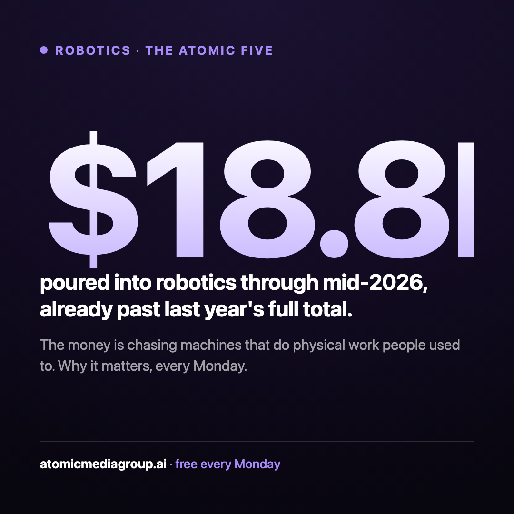
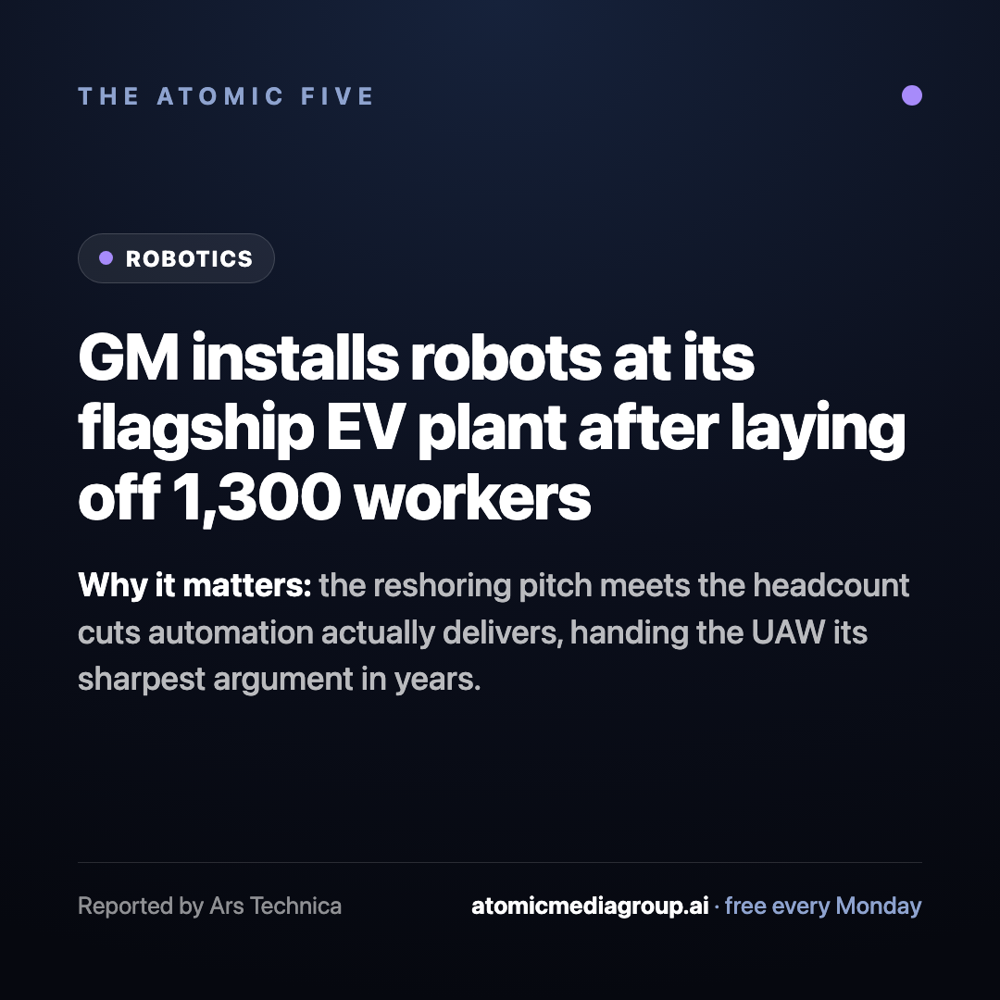
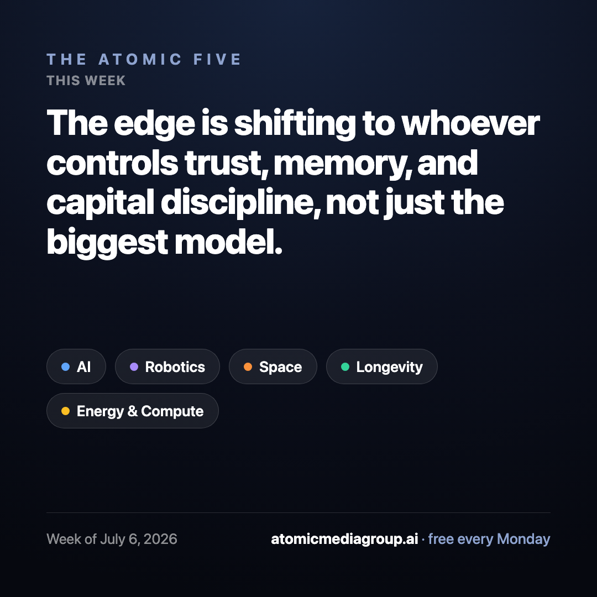

Everything below is generated from this week's real analysis. Scroll horizontally to swipe the carousel.
Monday centerpiece7 swipeable slides (1080×1350): a cover with the week's throughline, one slide per force with its own color, and a subscribe close. Highest-engagement image format on both platforms. Auto-generates from the pipeline, no extra writing.
← swipe / scroll →
For the Tue/Wed/Thu drips. The stat card stops the scroll far better than a headline card; the story card is the safe default. On LinkedIn & X, native text posts usually beat images, so cards there are optional.


